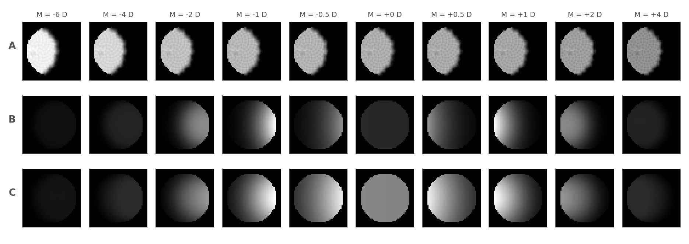
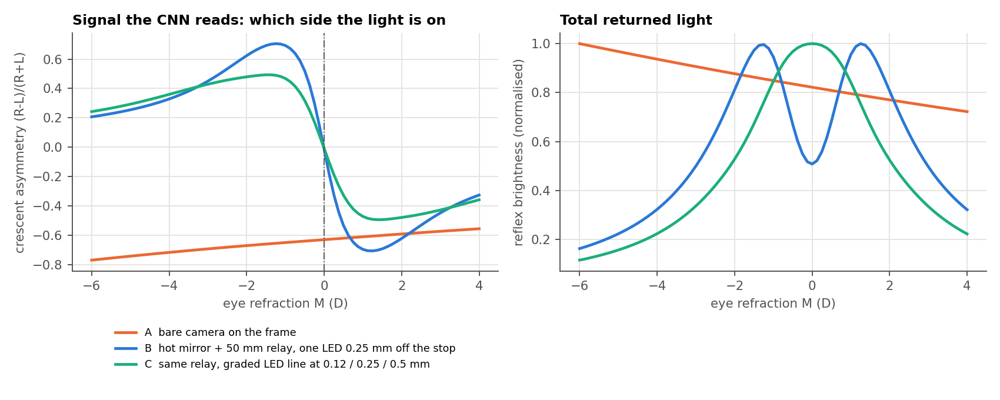
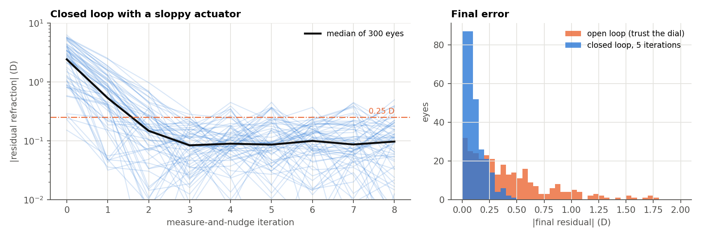

How the optics, IR illumination, camera, CNN and actuator fit on a pair of glasses
eyesim project · design note · 20 October 2026 · Research prototype, not a medical device
The short version
Don't point a camera at the eye from the frame. At 25 mm with no optics in between, a 1 D change in refraction changes the image by only about 2 %. Viewing from 30° off axis also measures the wrong part of the eye: peripheral refraction differs from central refraction by 1–2 D, differently in each person.
Fold the light path and add a relay lens. A hot mirror sends the IR sideways while visible light passes straight through. A lens with the camera stop at its focal plane (a Badal relay) makes a camera 50 mm away behave like a photorefractor at optical infinity. This mapping is a 2×2 ray-transfer matrix, and it plugs straight into the existing simulator (Section 3).
Measure through the Alvarez lens and drive the result to zero. The camera sees the eye plus the lens, so the loop only has to reach "the reflex is neutral". Your imprecise knob then stops mattering. In simulation, a loop with a sloppy actuator gets 91 % of eyes within 0.25 D, against 42 % when the dial is trusted (Section 7).
Motorize the plates you already have and add a position encoder. Characterize them first (Section 8). Buy custom plates only if they fail the checks there.
Do everything in software first. Then test on a commercial retinoscopy model eye (the Heine Skia), then on your own eye against an optometrist's refraction. No home-built model-eye bench.
What has to be true for this to work
Why a camera on the frame fails
The matrix transformation: relay optics
Optical layout on the glasses
IR illumination and camera
Microcontroller and the CNN on it
Closing the loop around a sloppy lens
Your stripped Alvarez plates
Which CNN, and what is actually novel
Software-first plan, then real lenses
Shopping list
Risks and open questions
1What has to be true for this to work
Eccentric photorefraction works like this. An IR LED sits slightly off the camera's optical axis. Light reflected from the retina comes back through the pupil and only part of it re-enters the camera aperture. The resulting crescent of light across the pupil, its side, width and brightness gradient, encodes the eye's refraction relative to the camera. In the current code, this is eyesim/photorefraction_rt.py, after Chen, Tan & Lewis [1]. Clinical photorefractors such as the PowerRefractor and Plusoptix work at about 1 m [2, 3]. Three conditions decide whether this can be moved onto a glasses frame:
Sensitivity. The camera aperture must sit at a vergence close to the eye's far point. Otherwise a 1 D change in the eye barely changes the reflex.
On-axis viewing. The measurement must be taken along (or within a few degrees of) the line of sight, because peripheral refraction is not central refraction.
Known geometry. The CNN needs the LED offset, aperture size and distance as inputs. On v2, leaving them out produced the M·D ambiguity, and the 10 mm LED offset produced a dark zone covering 99 % of typical eyes. This must also hold when the glasses slip on the nose.
2Why a camera on the frame fails
The obvious design puts a small IR camera and LED in the frame rim, 20–30 mm from the eye, looking up at the pupil. This is how eye trackers such as NVGaze work [4]. It fails for refraction for two separate reasons.
2a. Too close: the null is at −40 D
In the double-pass model, the reflex depends on the eye's refraction only through (1 + d·M), where d is the camera distance. At d = 370 mm, a 1 D change moves this by 37 %. At d = 25 mm it moves by 2.5 %. Row A of Figure 1 shows the result: from −6 to +4 D the frame hardly changes. A CNN could in principle read a 2 %/D trend, but a 1 mm slip of the glasses or a small LED drift changes the image by more than that.

Figure 1. Simulated H-LED frames from the eyesim ray tracer for a 6 mm pupil. A: bare camera on the frame (25 mm, LED 2 mm off axis); the image barely changes over 10 D. B: hot mirror plus a 50 mm Badal relay with one virtual LED 0.25 mm from a 0.15 mm stop. The crescent flips sides exactly at 0 D (fully corrected). C: same relay with a graded line of three LEDs, which fills in the dark band near 0 D. Generated by hardware/alvarez_doc/make_figures.py.
2b. Off-axis: you would be measuring the wrong part of the eye
A camera on the lower rim views the eye 25–40° below the line of sight. Refraction is different there. Oblique astigmatism grows roughly with the square of the field angle. Peripheral refraction at 30° differs from foveal refraction by about −0.7 to −1.4 D in double-pass measurements. In myopes it shifts in the opposite direction to emmetropes [5, 6]. A fixed correction (one matrix for everyone) cannot undo this, because the offset depends on the person. Even the PowerRefractor could not measure 15 subjects at 30° nasal [6].
ConsequenceThe camera has to look along the line of sight. With nothing in front of the eye, that is only possible by folding the light path with a mirror that is transparent to visible light, i.e. a hot mirror.
3The matrix transformation: relay optics
This is the useful matrix. Any paraxial optics between the eye's pupil and the camera stop (mirrors, a relay lens, the Alvarez plates) can be described by a ray-transfer matrix. In 1-D it is the 2×2 ABCD matrix. With astigmatism it is a 4×4 symplectic "ray transference" made of 2×2 blocks [7]. Writing the double-pass equation from photorefraction_rt.py with a general transference instead of free space gives:
camera-plane position of a returning ray: x_c = x_LED + G(p2) − G(p1)
free space (current simulator): G(p) = p + d·∇W(p)
any relay [x;θ]_cam = [A B; C D]·[x;θ]_pupil: G(p) = A·p + B·∇W(p) = A·( p + (B/A)·∇W(p) )
So a relay is equivalent to a free-space photorefractor with
d_eq = B / A ecc_eq = ecc / A aperture_eq = aperture / A
(4×4 astigmatic case: the null sits at refraction F_null = −B⁻¹A, a 2×2 power matrix)
That gives three practical results:
No new simulator is needed. The CNN's existing geometry input (d, ecc, pupil) just takes the equivalent values. Only the angles ecc/B and aperture/B, as seen from the eye, and the vergence A/B matter.
Badal configuration (stop at the relay's back focal plane, b = f): A = 0 and B = f. The camera sits at optical infinity. The null (neutral reflex) then falls exactly at full distance correction, and the calibration does not depend on how far the glasses sit from the eye, because B = f regardless. That handles frame slip. This is the same optometer principle autorefractors use [8].
The oblique hot mirror and any curved coated surface add a fixed astigmatic term to A and B. It appears as a constant offset matrix −B⁻¹A. Compute it from the design, then confirm it once with trial lenses (Section 10). It is fixed by the hardware, unlike the per-person peripheral-refraction error in 2b.
Design quantity (f = 50 mm relay)
Angle seen from eye
Physical size at the stop
Equivalent at 1 m
Camera stop (pinhole) radius
1.5 mrad
0.075 mm (150 µm pinhole)
1.5 mm
LED offsets, graded line per meridian
2.5 / 5 / 10 mrad
0.12 / 0.25 / 0.5 mm
2.5 / 5 / 10 mm
Source size (mask hole radius)
1 mrad
0.05 mm
1 mm
Pupil-plane resolution (diffraction, 850 nm)
≈ 0.2–0.3 mm, about 25 resolvable elements across a 6 mm pupil, comparable to a 1 m photorefractor. 64×64 CNN input is enough.
The 10 mrad outer LED matches the "1 m, 10 mm offset" configuration that the geometry sweep found usable. The inner LEDs fill in the dark band around the null. Roorda et al. showed that extended or graded sources make the brightness slope across the pupil more linear [9]. Figure 2 shows the signal for each layout.

Figure 2. Left: left–right asymmetry of the reflex. Its sign gives the direction of the error. The bare-frame camera (orange) never changes sign, and its slope is about 0.02 per dioptre. The relay layouts flip sign exactly at 0 D. Right: total returned light. The single-LED relay (blue) still dims near the null. The graded line (green) does not, so there is no blind spot to get stuck in. Beyond about ±4 D the asymmetry flattens, but its sign stays correct, and that is all the closed loop needs on its first step.
4Optical layout on the glasses
Two layouts are proposed. Build the first. The second is the product direction, and needs a custom optical part.
Figure 3. Prototype P1. The IR path starts at the eye, passes through the Alvarez plates (so the camera measures eye + lens), reflects off a 45° hot mirror, and goes through a 50 mm relay and a fold mirror to a pinhole stop. LEDs are injected through a small beam splitter so they appear a fraction of a millimetre from the stop. The module is front-mounted and protrudes about 20 mm. Weight is acceptable for a bench-worn prototype, not for all-day wear. Mirror image for the left eye.
P1: clip-on module (build this)
Where it mounts: on the front of the frame, temple side, as a 3D-printed housing (SLA resin, matte black inside) clamped to the rim and the hinge. Include a mechanical stop so it always clicks into the same position. Thanks to the Badal relay, small slips along the line of sight don't change the calibration. Sideways slip shifts the pupil in the image, and the network already handles that.
Path length: about 15 mm from the eye to the hot mirror, then 50 mm through the relay to the stop. Folding it along the temple keeps the module about 20 mm deep instead of 70 mm long.
Why the hot mirror goes outside the plates: the eye-to-lens gap (about 12 mm) is too small for a 45° mirror. Placing it outside also means the camera sees the eye through the Alvarez lens, which makes the zeroing loop in Section 7 possible.
Glints: the plates have four surfaces, each reflecting about 4 % of the LED light. That is far brighter than the retinal reflex. Use both of these: (1) tilt the plates 4–6° relative to the measurement axis (pantoscopic tilt, which glasses already have) so the specular reflections land outside the 150 µm stop; (2) a linear polariser on the LED and a crossed analyser on the camera. The fundus partly depolarises light, so the reflex survives at reduced strength. Model both in the simulator before relying on them.
P2: integrated version (the product direction)
Replace the 45° plate with a powered hot-mirror coating or holographic optical element (HOE) on the outer surface of the front plate. It acts as the combiner and the Badal relay at once. The camera sits at its focal point near the hinge. Patent literature describes hot-mirror films with over 90 % NIR reflectivity at 30° incidence and under 1 % visible reflectivity [10]. The costs: in P2 the IR passes through the plates twice, and the coating is a custom part. The 4×4 transference model from Section 3 handles the double pass, because it is just another known matrix that depends on the plate offset. Don't start here.
5IR illumination and camera
Item
Recommendation
Why
Wavelength
850 nm LEDs, pulsed in sync with the camera's global shutter
Good silicon sensitivity and invisible enough. Labels then need the 0.69 D IR→visible shift (ir_to_visible).
LED pattern
Two graded lines (H and V meridians), 3 sources each, at 0.12 / 0.25 / 0.5 mm from the stop centre. Add a 45° line if J45 accuracy is poor.
Removes the dark zone (Figures 1–2) and gives brightness slopes along each meridian. This follows the PowerRefractor's LED-array idea [2, 9].
How to place sources 0.1 mm apart
A chrome-on-glass or high-resolution film photomask with 100 µm holes, back-lit by one LED per line, on the side port of a 5–10 mm beam-splitter cube
Physical LEDs are about 1 mm across. The mask creates virtual point sources at any offset.
Camera (P1)
A small monochrome global-shutter module with good NIR response, e.g. OV9281- or OV7251-class boards (MIPI or USB)
Global shutter freezes the eye during short LED pulses. Monochrome gives the most NIR signal.
Camera (P2)
OmniVision OVM6211 CameraCubeChip: 400×400, 120 fps, global shutter, about 3.2×3.2×3.9 mm, made for eye tracking [11]
Small enough for a hinge. Check it is still in production.
Gaze and accommodation gating
Use the same IR frames to find the pupil centre. Only accept frames when the pupil is centred, i.e. the user is looking along the measurement axis. For a distance prescription, keep the most hyperopic stable reading over a window.
Accommodation only ever makes the eye more myopic, so the least myopic reading is the far point [8].
Eye safety
Pulse only during exposures. Measure corneal irradiance with an optical power meter at the eye position. Design to the IEC 62471 exempt group with margin, and get a lab check before anyone wears it for long.
IEC 62471 sets separate corneal and retinal thermal limits for 780–3000 nm, and near-eye geometry is the worst case [12].
6Microcontroller and the CNN on it
Prototype: tethered
Run the camera over a thin cable to a Raspberry Pi 5 or your laptop, clipped to your belt or sitting on the desk. The Pi drives the LEDs (GPIO, via a MOSFET) and the actuator driver. It runs the CNN in PyTorch or ONNX Runtime, so you iterate on the network without embedded work. The current PupilNet (~450k parameters, 64×64 input) runs comfortably in real time on a Pi. That is an estimate; measure it on your own Pi.
Wearable: STM32N6 in the temple
The STM32N6 has a Neural-ART NPU rated at up to 600 GOPS, a MIPI CSI-2 camera input and an ISP [13]. In other words, camera in, CNN out, on one chip. Develop on the ST N6 Discovery kit. Export with torch → ONNX → ST Edge AI, using INT8 quantization-aware training. The alternative is the MAX78000: very low power, 442 KB of weight memory (up to 3.5M weights at 1-bit) and a parallel camera interface [14]. PupilNet at 8-bit only just fits, so it is a stretch target.
Where things go on the frame: MCU board and motor driver in the camera-side temple, just behind the hinge. LiPo cell in the other temple for balance. A flex cable through the hinge. A single button: "measure now". Duty cycle: the device measures on demand or every few seconds, not continuously, which keeps the LEDs, the NPU and the battery mostly idle.
7Closing the loop around a sloppy lens
Your knob is imprecise, and so is any small motor with backlash. That only matters if the system trusts the actuator's position. In P1 the camera measures the eye through the Alvarez lens, so each frame reports the residual error: what is left after the lens. The controller repeats one cycle:
1. measure the residual r̂ (CNN, average of 4 frames)
2. if |r̂| > 0.12 D: move the plates by −0.8·r̂
3. go to 1
With the Badal relay the null is exactly "corrected", so the loop reaches the right answer without ever knowing the lens power. Figure 4 simulates this with an actuator that has a ±20 % unknown gain, a 0.25 D unknown offset, 0.3 D backlash and 0.08 D jitter, and a CNN with 0.1 D per-frame noise and a ±10 % scale error.

Figure 4. 300 simulated eyes from −6 to +4 D. Closed loop: median residual 0.09 D after 5 iterations, 91 % within 0.25 D. Open loop (measure once, set the dial, trust it): median 0.32 D, 42 % within 0.25 D. The noise and actuator numbers are assumptions, not measurements of your hardware.
This also changes what the CNN has to do. It needs the right sign everywhere and the right magnitude near zero. It no longer needs accurate absolute dioptres at −6 D. That is a much easier problem, and much more robust to the sim-to-real gap. Reporting the prescription still needs one absolute number: the lens power at convergence. That comes from the plate position encoder plus the one-time lensmeter calibration from Section 8, not from the knob.
8Your stripped Alvarez plates
Consumer adjustable glasses use the Alvarez principle: two plates with matching cubic surfaces, t = A(xy² + x³/3). Sliding them sideways by ±d gives power P = 4(n−1)A·d (Alvarez 1967) [15]. The known weaknesses are poor off-axis image quality and sphere-only correction [16]. Characterize the plates before deciding anything.
Characterize (1–2 days, cheap)
Power vs offset. Mount one plate fixed and the other on a micrometer translation stage. At 7–9 offsets across the range, read the power with a lensmeter. A used manual one is fine, or an optician will often measure for free. Fit P = k·d + P₀. The gain k (D/mm) sets your actuator precision: 0.125 D ÷ k. At a plausible k of 4–6 D/mm, that is 20–30 µm.
Unwanted cylinder. At each offset, note any cylinder the lensmeter shows, both at the centre and 5 mm off centre. Under 0.25 D over the central 10 mm is good.
850 nm transmission. Shine your IR LED through the plate onto the camera and compare with no plate. Over 80 % is fine. Some coatings and tints absorb NIR.
Surface reflections. With the LED and camera roughly where they will sit in P1, image the glints, then try the plate tilt and crossed polarisers.
Gap and wobble. Measure how much the gap and tilt between the plates change across the slide. That is a source of power error the encoder can't see, so the closed loop has to absorb it.
Motorize: replace the knob, keep the plates
Actuator: a micro linear stepper with a lead screw (cheap, a few mm stroke) driven by a small stepper driver. Or, for a cleaner product path, a piezo SQUIGGLE-type micro motor: about 2.8×2.8×6 mm, 6 mm travel, 0.5 µm resolution [17].
Position sensor on the moving plate, not on the motor: a magnetic linear encoder (a multipole magnetic strip plus a sensor chip, sub-micron resolution) or New Scale's TRACKER-type sensor [17]. Measuring the plate directly bypasses all backlash in gears and knob. Together with the lensmeter fit, this gives the absolute power for the report.
Mechanics: keep the original rails if they are smooth. Add a light preload spring so the plate never floats inside the backlash.
Do you need better Alvarez lenses?
If the characterization shows…
Then…
Range ≥ ±4 D, less than 0.25 D unwanted cylinder over the central 10 mm, good IR transmission
Keep them for P1. All the risk is in sensing, not in the lens.
Strong off-centre astigmatism or a large plate gap
Commission optimized freeform plates. Barbero and others showed that optimized Alvarez surfaces keep power and astigmatism uniform across the field; one design covers −10 to +2 D [16]. Diamond-turned PMMA prototype shops (e.g. Syntec Optics, Diverse Optics) or 3D-printed freeforms for quick iterations [18]. Expect hundreds to a few thousand dollars per pair; get quotes.
You want to correct astigmatism
Add a second, astigmatic Alvarez pair per eye (t = A(x³/3 − xy²), already in web/frontend/src/lib/alvarez.ts): 4 plates and 2–3 actuators. Do this after sphere-only works.
Alvarez mechanics become the bottleneck
Electrically tunable liquid lenses (as used in Autofocals [19] and by Hasan et al. [20]) have no moving plates, but no cylinder either.
9Which CNN, and what is actually novel
Keep a small CNN. Don't move to a transformer or a big backbone. The input is a 64×64 IR image, the training data is synthetic and unlimited, and the model has to run INT8 on a microcontroller. The v2 report showed the errors come from missing information (the dark zone), not from the model being too small. Recommended v3:
Backbone: a small ResNet-style network (0.5–2M parameters), with no stride-2 first layer (the crescent edge is a few pixels wide) and CoordConv x/y channels plus a pupil mask, because crescent position is the signal [21].
Geometry conditioning with FiLM: the equivalent geometry from Section 3 (θe, θa, vergence A/B, pupil radius) scales and shifts each stage's features, instead of being concatenated at the end [22].
Output a mean and an uncertainty for each of M, J0, J45, trained with a Gaussian negative log-likelihood [23]. Optionally use a small ensemble [24]. The controller then knows when not to trust a frame.
Inputs: stacked frames: the H and V LED lines × 2–3 small lens dithers (e.g. current position ±0.5 D).
What is novel isn't the backbone. In this literature search, nobody has published a wearable that both measures refraction and drives its own tunable lens from that measurement. Autofocals used a separate autorefractor [19]. The closed-loop tunable-lens patents describe handheld or tabletop instruments [25]. Three contributions would be genuinely new:
Active photorefraction. The tunable lens is part of the sensor. Small known dithers give the network differential images, which removes most of the remaining ambiguity.
Null-seeking control with uncertainty. The Section 7 loop driven by a calibrated uncertainty, with a provable convergence condition (the sign of the residual must be correct).
Self-calibration by simulation-based inference [26]. Port the ray tracer to PyTorch. On a new unit, fit its few unknown geometry parameters (stop size, LED offsets, glint pattern) by comparing a handful of real frames with rendered ones, then fine-tune. This is the principled answer to the sim-to-real gap.
Do a proper prior-art and patent search before claiming novelty. The summary above comes from a limited literature search.
10Software-first plan, then real lenses
Phase S: software only
Simulator: add a Relay transference (Section 3) and the Alvarez lens as a thin lens in the path, plus graded LED lines, plate glints and polarisation leakage, pupil decentration from gaze, and an accommodation range. Regenerate the dataset (about 150k samples first).
CNN v3: as in Section 9. Track it with scripts/report.py. Target: correct sign on more than 99 % of frames, and residual error under 0.25 D for |residual| < 1 D.
Closed-loop twin: run the CNN in the Section 7 loop with the actuator model (backlash, gain error, encoder noise). Extend eyesim/pipeline.py.
Embedded check: INT8 export, and confirm accuracy holds after quantization.
Phase H: real Alvarez lens, without a home-built bench
Lens: lensmeter calibration of your motorized plates (Section 8).
Calibrated eye: a commercial retinoscopy trainer such as the Heine Skia. It has a metal body, a 2–8 mm variable pupil, a cylinder axis scale, a holder for trial lenses, and a 32 mm achromat [27]. It is built to produce exactly the retinal reflex that photorefraction reads, and its refraction is set on a scale, so it is a certified label source rather than a rig you build and calibrate. Add a trial lens set for cylinder. Use it to check the oblique-path offset matrix −B⁻¹A and the glint suppression.
Your own eye: get a cycloplegic or careful subjective refraction from an optometrist. Then wear P1, fixate a target 6 m away, run the loop, and compare the converged lens power with the prescription. Repeat on several days to measure repeatability.
Fine-tune only after measuring the sim-to-real gap, using the self-calibration in Section 9, item 3.
11Shopping list (prices are rough; verify with vendors)
Item
Purpose
Rough cost
Hot mirror, 25 mm, 45° (Edmund/Thorlabs class)
Folds the IR path, passes visible
$50–150
Relay achromat f = 50 mm, small fold mirror, 5–10 mm beam-splitter cube
Raspberry Pi 5 (prototype); STM32N6 Discovery kit (wearable)
Compute
$80 + ~$200
Micro linear stepper + driver, or piezo micro motor; magnetic linear encoder
Motorized plates with absolute position
$30–400
Micrometer translation stage
Plate characterization
$50–200
Manual lensmeter (used)
Absolute lens calibration
$150–500
Heine Skia retinoscope trainer + trial lens set
Calibrated eye for Phase H
~$610–740 + $100–300
Optical power meter (NIR)
Eye-safety measurement
$100–400
SLA 3D printing (housing)
Clip-on module
$20–100
12Risks and open questions
Glints through the plates could be stronger than the simulator suggests. Test tilt plus crossed polarisers early, on the bench, with the real plates (Phase H step 1).
Light budget: a 150 µm stop collects little light. Real 1 m photorefractors work at similar angular apertures, so it should be feasible, but confirm signal-to-noise against the eye-safety limits.
Gaze: measurements are only valid when looking along the module axis. Gating on the pupil centre handles this, but it lowers the measurement rate.
Accommodation: a young user's eye fluctuates by ±0.25–0.5 D. Use far fixation and the most-hyperopic-stable reading.
The relay result is first-order (paraxial). The figures assume ideal thin optics. Real aberrations of a 50 mm achromat used near-axis are small, but put the real prescription into the simulator before ordering parts.
verified Figures 1, 2 and 4 come from the eyesim ray tracer and the scripts in this folder. The relay equivalence follows algebraically from the double-pass equation. not yet verified Glint suppression, light budget, actuator numbers, prices, and all hardware behaviour.
References
Chen, Tan & Lewis, "Simulation of eccentric photorefraction images," Optics Express 11(14), 2003. (Basis of eyesim/photorefraction_rt.py.)
Kim et al., "NVGaze: An Anatomically-Informed Dataset for Low-Latency, Near-Eye Gaze Estimation," CHI 2019. research.nvidia.com
Atchison, Pritchard & Schmid, "Peripheral refraction along the horizontal and vertical visual fields in myopia," Vision Res. 2006; summary in Lundström 2005, aphys.kth.se